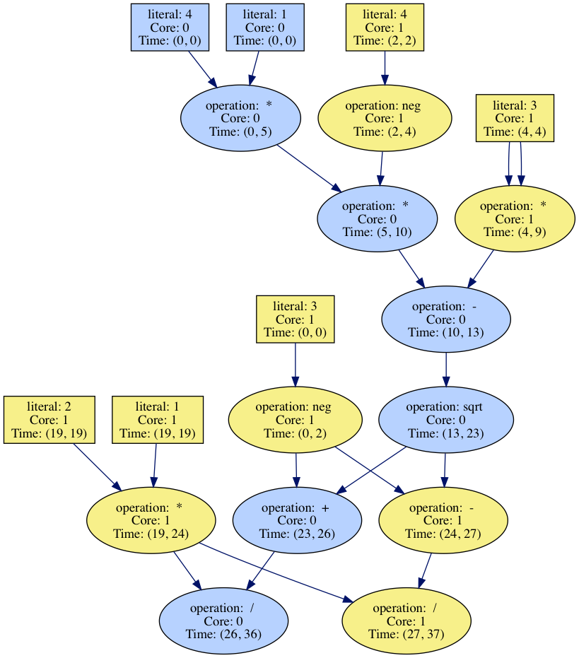

A Synthesis-Aided Compiler for Manycore Computation
|  The quadratic equation partitioned across 2 cores. |
Alexa VanHattum | |
|---|---|---|
|
Novel, programmable computer architectures offer developers orders-of-magnitude performance improvements over traditional CPUs or GPUs for certain classes of computation, such as dense matrix computation. However, compiling programs to run on such hardware accelerators is an arduous task. An efficient, optimized compiler for a new architecture may take multiple engineer-years of work to build, much of which is specific only to that target accelerator. We are creating a compiler for a re-configurable, manycore architecture that partitions and maps computation across a grid of distinct, simple processor cores. Our compiler leverages program synthesis, a core programming languages technology used to automate the construction of programs, to spatially map computation without relying on traditional hand-written optimizations. We achieve a 3.3-5.0X speedup in estimated idealized cycle counts on microbenchmarks compared to a single-core execution. While our compiler does tread the limits of reasonable scalability for modern synthesis techniques, we are able to compile our largest microbenchmark (152 lines of code) to a non-optimal, but 1.7X faster, partitioning within about an hour. This work aims to ultimately allow developers to write programs for new, efficient hardware accelerators without learning to write dense low-level code themselves or waiting for an optimized compiler to be developed via traditional mechanisms. In addition, we expect such synthesis-aided compiler technology to be more flexible for compiling to distinct but related architectures in the future. |
||
| Paper [ PDF ] | ||
| Presentation [ PDF ] | ||
| Source Code [ TGZ ] | ||
Questions or comments? Email avh@cs.cornell.edu